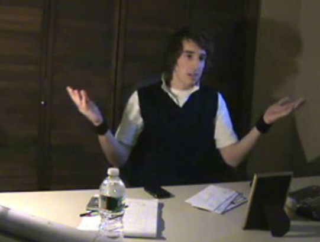
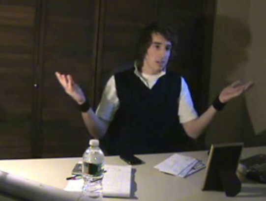
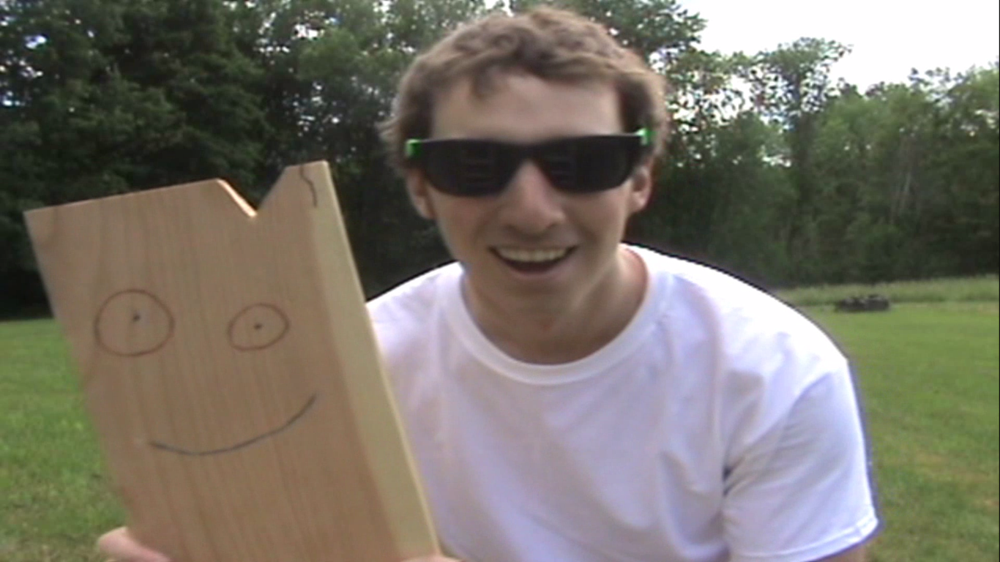
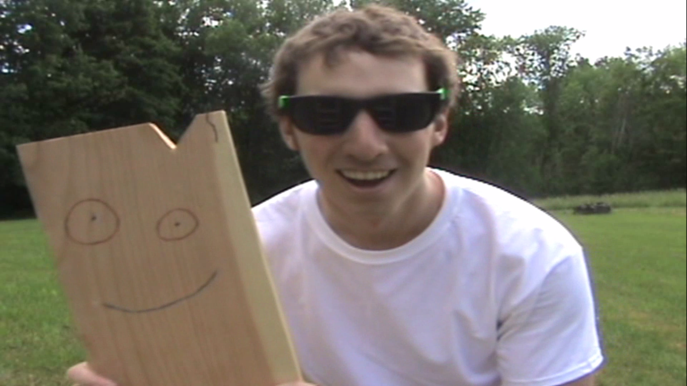

The Story of ChaseFloydInc
ChaseFloydInc, or CFI for short, is the name of Chase Floyd's Youtube Channel and the "company" behind all of the associated works hosted there. Founded by Chase Floyd (me!) in 2010, CFI began as just a place to upload some videos I had made for school projects. However, CFI soon evolved and developed into much more, for it became a place to share all of the latent ideas, goals, and potential I had residing within my mind for years. Flash-forward to the present day and CFI continues to grow and expand with almost 1 million total views and new content uploaded every two weeks!
 


 

2010: CFI is Born
The story of CFI is a complex one, but as is often the case when unwraveling anything complex one must go back to the very start. After uploading those school project videos, CFI remained dormant and I really did not have any concrete plans on what to do with my aptly named account. This all changed towards the end of my Senior Year in high school though. During my high school years I developed a very strong interest in fitness and exercise, and this consumed much of my free time. All of this working out did help lay the foundation for my current "growth oriented" mindset though, so combined with the "exercise specific" improvements I achieved I do look back on this time as being productive. However, around the halfway point of my final year I discovered my passion for music as well...
2011: CFI Begins with Pull-Ups and Pianos
Discovering this was not easy though, since for some reason it had been ingrained in my mind that only people who were "musical" people (people born with some kind of latent gift/talent) could play music. I also thought, for some odd reason, that the people who were "musical" could only tap into these gifts if they started practicing at a young age. I had it in my mind that not only could I not learn how to play music because I was not naturally "talented", but also because I was already an "adult" (age 17-18 at the time). I held these same misconceptions about a few other things as well, such as MATH (how I overcame that is a story for another day), but despite thinking this I still really wanted to learn how to play an instrument since deep down there was a small part of my being that kept telling me that maybe, just maybe, this wasn't true...
Overcoming Misconceptions and Choosing an Instrument
I somehow ended up in the Jazz Band during my Senior Year as an elective, and despite playing around the some basic percussion instruments I really had no direction as to how to learn how to play a musical instrument (or even which to learn for that matter!). Guitar interested me, but what had really always perked my ears was the magical metallic vibrations of the piano. Thus, for my 18th birthday my father got me a Casio LK-100 Keyboard, and upon receiving it I was DETERMINED to "prove them wrong" by learning how to play it...
The Piano Picked Me but I had to PRACTICE
Simply SAYING that you are going to learn something is far easier than DOING it though. Learning how to play the piano is difficult, and it requires a lot of patience and persistence, especially when using the basic piece of equipment that I had. Progress was thus slow at first, and my hands/fingers simply did not want to cooperate. I kept practicing though, and by the end of the school year I was able to play a few very simple songs. Upon seeing this, some good progress towards my goal, I started to really feel and believe that maybe those two things, music and math, along with pretty much anything else similarly considered, could be accomplished by anyone (not just people with "talent") if they were willing to put in some hard work. I suppose that this was the point in which I stopped believing in the idea of "talent" and started believing in the idea of "work". That is, with hard work and dedication one can accomplish ANYTHING they set their mind to!
Success Breeds Success
This truly was a seminal, life-changing moment in my life. After this I began to practice piano even more during the hot, summer months that followed and (as I now say all of the time) "success bred success". Success truly does breed success, since before I knew it I could say with confidence that "I knew how to play the piano". Everytime I practiced and got a little bit better I was able to take that little bit of better and use it the next time I practiced to get even better. I had become "learn-ed", and it was due to hard work and not because of some kind of latent ability.
CFI's First Official Upload
Throughout this time I kept up with my exercising as well though, even hitting 20 pull-ups for the very first during late July of that year. This had been a long-time goal of mine, since I wanted to get onto the "Hall-of-Fame" on a website called "Twentypullups.com". This website even had a "YouTube" section in their Hall-of-Fame, designed for people who went one extra step and filmed themselves completing a set of 20, so I made sure to film myself hitting this magical number with the goal of uploading it to my dormant YouTube Channel. I did, and this marked CFI's first "serious" upload...
CFI Music Hits the Airwaves
During that summer, the Summer of 2011, I felt on top of the world. I was strong as an ox, and I had learned how to play a musical instrument. It felt great, and those months will forever remain as a special time in my mind since it marked the beginning of a "renaissance" in my life. A "rebirth" of Chase Floyd, if you will, into "ChaseFloydInc". I felt the need to share my musical progress with the world though, and that is when it clicked; Why not make some videos and upload them to YouTube! I did, making a few basic covers and a medley of myself playing piano on my old Casio keyboard, and the response I got from my friends and family was very positive.
Can't Take CFI To College
As I said before, "success breeds success". The positive responses I got for the handful of videos I created led me to want to do even more. However, college was on the horizon and I feared that I would have to leave everything that I had worked so hard on behind. I could not (at least I felt I could not) bring my keyboard with me, nor could I work out as much as I had been during a rigorous college semester. I felt a bit saddened that all of these new ideas might "die", but school always came first so off I went to college a bit conflicted as to how to feel.
...Or Can I?
The first few days of college were...weird. Freshman arrived a week early to get acclimated to the campus, and needless to say I was a bit bored. I worked out as much as I could at the local playground (calisthenics!), but I still felt like I needed something else to do. Something to improve on, via practice. That something was music, piano, of course. I didn't have my keyboard though, but oneday while exploring the buildings on campus I discovered that I actually had something much greater. My college had FREE, PUBLIC access to their music hall. Most students did not know about this, and those that did were often too afraid to enter the music hall if they weren't music students. I could not resist though, and upon hearing this I just knew that I had to get in...
The Piano Palace
I entered this palatial building one hot afternoon to a whoosh of cool air, and despite being scared and feeling out of place I quickly found a "practice room" to hide in. This room had all white, sound-proof walls and at the end of it lay the most magical upright piano I had ever seen. Up until that point I had never even touched a REAL piano before, but I knew that now was the time. I vividly remember walking up to it, sitting down, and starting to play some of the songs I had learned back during the summer on my Casio keyboard. That sound, that beautiful metallic sound, that echoed out of that upright piano will forever remain embdedd in my mind. I had never heard anything so beautiful in my entire life. Hearing a real piano, in realy life, being played, by yourself, for the very first time is incredible. Hearing it with fresh ears, as they say, is amazing. I henceforth began playing all of the songs I had learned, and I spent many hours there on that fateful day...
CFI's First Hit
This became my haven while away at college. I was never a big socializer, so this appealed to me far more than any party or club ever would. Once the semester started I began making trips to the music hall at least once a day (usually after dinner at the dining hall!) to practice for AT LEAST an hour (usually more!). One the weekends I would make several trips, staying for several hours. I played and played, practiced and practiced, and learned and learned. I learned many new songs, and the urge to film some of them soon re-entered my mind. I had left my camcorder back at home though, but fortunately my roommate at the time allowed me to borrow his. With it I filmed my first "official" entry into what is now known as the "CFI Music Genre", my "Lavender Town" cover. This is still my highest viewed video, and one of my favorites since the old piano I filmed it on helps make it seem perfectly eerie. I wanted to film more though, so when I returned home for Thanksgiving that year I made sure to bring my camcorder back with me...
Expanding the Brand - CFI's First Four Genres: Music, Fitness, Comedy, and Fun
After returning to finish up my first semester, I filmed a couple more piano covers and received very positive feedback from my friends and family yet again. I knew I had to keep improving at piano though, but I now also wanted to expand CFI's offerings as well. Ideas on how to do so started popping into my head left and right, and before I knew it I had formulated a plan. CFI would have different "genres" of content, kinda like "stations" within my "channel", focused on different things I liked to do. Those two things that I had been working on, Music and Fitness, combined to make the first two genres. My natural interest in being comedic and having fun led to the birth of CFI's third and fourth genres, and with this CFI's first four "genres" had been created; Music, Fitness, Comedy, and Fun!
Creating Content for the Genres
Once I had figured out this "genre-based" vision for where I wanted to take CFI, I kept working to improve my fitness and musical skills since I knew it would open up many video filming opportunities and pathways for those two genres. This led me to create and film several more "batches" of covers on the upright pianos at my university's music hall, garnering good viewership and response from the public. I also began production on another fitness video detailing the "City Park" workout I was using while at college. In addition to this I began tapping into some ideas I had for Comedy videos by making a skit in which I "interviewed" another "Chase Floyd". However, while I had many ideas for "Fun" videos the story behind the very first one (myself juggling Poké Balls) commands a detailed explanation...
Early Ideas Lead to a new Genre
Little did I realize it at the time, but all of the "learning", "experiencing", and "doing" that I had been practicing while working out, doing pull-ups, and learning how to play the piano these past few months would shape the person I am today and hope to keep improving upon for the rest of my life. I thoroughly enjoyed learning and doing these things so much, and the euphoric feeling I would get whenever I "crossed that point A to point B bridge" of not being able to do something and then being able to do it became addictive. I just couldn't get enough, but I wanted more than just pull-ups and piano. And that is when it hit me like a ton of bricks...
The Fifth Genre is Born: CHALLENGE
Growing up, and even today, my father was always "good" at stuff. You name it, he was good at it. Sports, fishing, darts, pool; he was just "good" at stuff, and it seemed like it was natural to him. Even stuff he had never done or practiced before, like a random board-walk game. I began thinking about WHY he was so good at everything, especially things that were new to him. There had to be a reason, since I had just debunked the idea that only people with in-born gifts could accomplish certain things. I began thinking in my mind that maybe people who seem to do most thing well, and more importantly new things well, have a lot of EXPERIENCE LEARNING how to DO new things in general. I then thought to myself that if I just PRACTICED how to do things, by learning, experiencing, and DOING as many NEW things as possible that I too could become "good" at everything, just like my dad. It was then, around December of 2011, that the fifth and final genre of ChaseFloydInc was born; CHALLENGE!
The 100 Challenge
CHALLENGE is a nine letter word that has become DOCTRINE in my life. This concept would become the focal point of CFI's fifth genre, and eventually CFI itself. Upon further refining my idea to have myself LEARN, EXPERIENCE, and DO as many new things as possible I developed the "100 Challenge". The concept behind the "100 Challenge" is a life-long program designed to challenge oneself to learn, experience, and do 100 challenging new things that they could not do before and that most people have not accomplished. The idea is "list-like" yet elegantly simple in that practitioners ideally write down things they want to do onto a list at the start, and then one-by-one for the rest of their life work on learning, experiencing, and doing those things (and anything else they added along the way!). I fell in love with this idea, for it not only translated perfectly to film and opened up many new ideas for making YouTube videos, but it also allowed me to keep doing "point A to point B" things (something in which you cannot do at all and then with practice can do).
The First Challenge was a Do or Idea-Die
Once I had this idea in my mind, my own "list" became flooded with ideas for potential challenges. The very first one I had though, "Learn How To Juggle", would be the first "test" as to whether or not I was even worthy of undertaking the creation of the 100 Challenge. I had to again prove to myself and the world that I could learn how to do something that I had no ability whatsoever to do, and failure was not an option since the idea of the 100 Challenge depended on ME doing A LOT of challenges!
Setting Up For the Future
I began practicing immediately, and by this time it was almost Christmas time. The second idea I had for a challenge was a musical one, "Learn How To Play Guitar", so for Christmas I asked my father for a guitar. He got me one, and I thus began pracitcing how to play guitar as well. There I was, January of 2012, not a year-removed from being just some kid obsessed with working out, sitting in my house practicing piano, juggling, and guitar all in one day while also working out and working on new ideas for videos. Needless to say, Chase Floyd's renaissance was in full-swing...
2012: CFI's Renaissance Takes off with CHALLENGE
Upon returing for my second semester that Winter, I kept up with my practicing and my school work. I had a clear vision of what lay ahead for CFI, and I worked on reaching that vision every single day. I had an EPIC idea for a Fun Video (My Best Friend Plank!), and I wanted to begin filming some footage for my eventual first entries into CFI's Challenge genre, but weather and school caused these things to be pushed off for a few months. I did however film a juggling video (myself juggling Poké Balls) since I felt that I needed something in the Fun genre (and I just couldn't resist!) and I released it around the time I released my first comedy video (The Interview)!
Work is Fun
Times were good at CFI. I was brimming with ideas (I always am!), I was working and making progress on new videos every day, and I was getting a decent amount of views. I was having fun, learning and practicing new things, nursing my calluses (guitar fingers!) and loving every second of life. By the time the Spring Semester was winding down though, I was excited for the Summer ahead since I knew it would be my chance to film more material. It was around this time that yet another idea for a challenge "wheeled" into view...
My Greatest Challenge Yet: Launching the 100
The Summer of 2012 was a special one, for not only did I create the aforementioned Fun genre video with "my best friend", but I also completed and filmed my first three challenges; Juggling, Guitar, and Learning How to Ride a Unicycle. This third challenge, Unicycling, was by far the most difficult thing I had learned how to do in my life up to this point. I remember countless dusty, hot Summer days outside using the "ladders" to help me learn. These were halcyon days and the prime of the renaissance of Chase Floyd. The Challenge genre was thus released with these three challenge videos hitting the airwaves in the later portion of the Summer of 2012, right before I headed back to college to start my sophmore year...
Continued Expansion of CFI's Genres
Upon returning to campus I swiftly filmed a few scenes of myself doing my "City Playground" workout, adding another video to CFI's Fitness genre. Many more piano covers followed, and so did another "interview", this time with the one and only Dave Coulier. I even found an old video I had made back when I as in 9th grade of myself catching a Native Wild Brook Trout to upload as the first entry in the "CFI From the Vault" sub-genre. Times were somehow even better, since not only was I continuing work on my piano music but my challenges had opened up the door to even more video ideas. I'd go on to film and release two of these ideas, a finger-style guitar cover of the MMPR theme along with becoming "The Wheel: The Unicycle Riding Super Hero" a year later in the Summer of 2013, two videos that without the idea of the 100 Challenge never would have existed.
2013: CFI's Renaissance Gets More Grandiose
Prior to that Summer though I continued working on CFI and more and more did I want to add more Challenge videos to my lineup. And add more Challenge videos I did. At the end of the Summer of 2012 I had found my old Rubik's Cube, jolting "Learning How to Solve a Rubik's Cube" up my list of challenges to number four. I also began work on writing my very first song, "You", which would become my 5th Challenge. In January of 2013, a new idea sprung into my mind one day in the form of a dream. I had a dream about "stop motion" that essentially clarified and explained how this art-form was done. I thought, no I knew, that this was a sign that for my 6th Challenge I had to do something with stop-motion, and I thus created my very own stop-motion film; Brothas. I also received yet another instrument as a gift, this time in the form of a Harmonica from my sister. Naturally, this would move into the 7th spot on my list of challenges to do!
CFI Music Risks It All for the Grand
During this time I kept making more piano covers, eventually graduating from upright pianos to grand pianos. I vividly remember having to sneak into the music hall very early in morning, since the grand piano rooms were kept supervised during the day to prevent people from touching them. I was a daring one though, and I snuck in many times to film. Nothing compared to the sound of a real grand piano though, so it was well worth the risk. I filmed many great covers on those grand pianos, and the memories of those tense early morning entries and escapes still make me smile.
Challenges Lead to More Content and Sub-Genres
I had it all. CFI was up and running with new content being uploaded and even newer content being worked on in the pipeline. I had become a very good piano-player whose covers were well received and viewed, but I still had flaws like not even knowing how to sight read (I still don't, but someday will!) so I had plenty of reason to keep getting better. All of the new challenges I had done kept opening new doors as well, especially in the form of stop-motion animation. Growing up I had amassed a very large collection of toys and figures, so natually these meshed very well with my desire to create more stop-motion content. I considered these videos to fall under the Fun genre, but in a way stop-motion had become a sub-genre of sorts. Not only did it become a way for me to share my collection with the world, but it also became a way to INSPIRE the world by helping others to see that one could even FLY if they put their mind to it!
Flying High
By the time I had released my "Flying" video, it was the Fall of 2013 and I had been working on CFI for many years. I felt that I had a lot more to offer, and I even had two new ideas for challenges enter my mind in the form of "Writing a Novel" and "Creating a Music Album". I considered the latter, number 9, to be a culmination of my having learned how to play the piano, and it was a fitting challenge to cap off the single digits. Things were about to change though, and in a way the renaissance that saw such an "ease of creation" was about to end...
2014: CF Struggles With the I
PERFECTLY is a nine letter word that has become DAMAGING in my life. When I began CFI I filmed with a "carefree abandon", and because of that I was able to consistently create content. But as the years went by, I became hypercritical of my work. During the 2013 Fall Semester this began in full. I began to feel that I always had to out-do myself, and I always had to get better. The former may be unsustainable, and it began to eat at me. Piano for example is all about perfection, so little things like not hitting a note "just right", background noise, camcorder sounds, and even my own appearance stalled my ability to produce content. This carried over into my other videos, for after re-watching what I once thought was quality work, my opinion of what I had created soured due to silly reasons such as "weird angles", "lighting", and "smacks". I began to hate myself for feeling as though I had "rushed" things to production, or that I had not "tried hard enough" when filming takes. I felt guilty. I tried to remaster my older videos, and while I had some success here it was frustrating and time-consuming. I became obsessive-compulsive, and suddenly nothing was ever good enough. This led me to take less risks, such as filming shorter piano videos that I was less likely to "screw up".
Frustrations with Perfection
By the time the Summer of 2014 arrived I began to feel that I needed a break from the Music genre, so I mainly focused on my challenges, which had become my favorite thing to work on. Production on the Novel and Album challenges, eight and nine respectively, continued but were filled with frustration, second-thoughts, and guilt. This led to a "unlisted" release for fear that my work was not worthy of being public. I also began work on my 10th Challenge, "Becoming Ambidextrous". I believed, and I still do, that handedness is a choice. I proved this with that challenge, but filming this proved to be a "perfecionist's nightmare". All of these newfound problems with CFI seemed to correspond to a downward shift in my life in general, for I was becoming more and more obsessed with my school work and GPA...
Academics Become the Focus
When I entered college, I was undecided in major. I knew that I had always loved science, and school for that matter, but at the time my main goal was to "repair" myself and get over my "fear" of Math. If you recall, I considered Math to be like Music in that only "math people", talented individuals that started practing at a young age, could be good at it. I thus made sure to take many Math classes in an attempt to debunk this misconception, and my skills improved rapidly. So did my academic confidence though, but by the time I had realized that no class was a match for a student willing to work very hard (such as me!) I was running out of time...
Conquered Fears and Newfound Regrets
Entering the Fall 2014 semester, things had changed. I became obsessed with taking as many classes and as many CHALLENGING classes as I possibly could to boost my academic confidence and standing among my peers. I studied day in and day out, often time putting in 12+ hour work days reading and doing science and math homework. I conquered my fears one by one, even the almighty Calc 2 with Vlad, but despite this I felt even worse. The more I accomplished, the more that I felt that I could have been even better had I acquired this mindset earlier. I felt guilty, and as if only a time-machine could fix this. However, I eventually found that one of the best ways to fix one's own regrets is to help prevent it in others, thus leading me to fall in love with my current career as a teacher.
2015: CFI Goes on Hiatus
I had to spend 5 years in college due to declaring late and changing my major, but by the time that 5th year began CFI's production had slowed down drastically. Challenge Number 10, Become Ambidextrous, was mostly completed during the prior Summer of 2015, but it had taken over two Summers to film and had nearly driven me mad. The months before this only saw a few leftover piano covers, a single Pokémon themed video-game upload (an early "stream", if you will!), and another stop-motion video I had finally got around to finishing uploaded to CFI as well and it would stay that way for quite awhile...
Stretching Open New Doors
When I say that I was obsessed with school, I meant it. That literally consumed almost all of my time during the 2015-2016 school year. I kept exercising though, and I dabbled in training for a new challenge to do "Box Splits". Upon graduating college exercising became my main focus yet again for I had fallen a bit out of shape, and stretching was a major component of my training. I had become noticeably weaker though due to a lack of proper training and dietary changes, so progress was slow and at times very uncomfortable. I hurt my legs badly from over-sretching during this time though, leading me to begin spending A LOT of time just sitting on the grass in my yard to rest them. How bad my legs got, and how bad of shape I was in overall is a story for another day, but this "grass sitting" would lead to another challenge and the eventual REBIRTH of CFI...
2016-2017: CFI Shall Rise Again
Towards the end of my final semester of college I became interested in how to do the "Vulcan" hand sign. I thought that only people with "special ligaments" in their hands could do this, but I would soon learn that this is yet another thing that with hard work ANYONE can learn how to do. Simple as it may be, this "hands-on" mindset would continue after watching an episode of Nickelodeon's "Doug" in which the main character, Doug Funnie, sits at his desk and spins a pen trying to write in his journal. This got me thinking that "Pen Spinning", which I never even knew was a "thing" would be the perfect thing to do to break me out of the slump I was in and complete my 11th challenge.
Slow and Steady Progress
From 2016 to 2017 I began practicing Pen Spinning during all of the time I spent sitting around with my damaged legs. Progress was slow, as this is a rather difficult skill to learn, and it thus took much longer than my other challenges to complete. During the time I spent working on this skill A LOT happened in my life as well, but I remember finding time (a key aspect of doing a challenge!) to pen-spin during all of it (Ex: Pen Spinning at the airport while waiting to go to my sister's wedding! Pen Spinning before interviewing for my first teaching job!)! Teaching would rightfully take up most of my time during this period though, but I still found time to not only film my 11th Challenge but to also film my "Reflections and Progress" video for Challenges #1-5!
Positive Encouragement Paves the Way
The latter was actually finished prior to the former, but upon being posted on CFI's homepage (though still unlisted), many of my students shared with me some of the nicest, most positive thoughts about what I had created. In fact, this was truly the second major turning-point in the history of CFI, for it sparked the beginning of a new era. My students began watching all of my old videos, and they really liked them. After years of frustration, I began to think that maybe my work wasn't all that bad. I also began to think that maybe I had to get back to work...
2018-Present: CFI is Reborn
It has taken some time, and while production on many projects is slow but on-going, with the encouragement of my students ChaseFloydInc officially ended its "hiatus" during December of 2018 (a few months after the 11th Challenge video received positive reviews). I am now uploading videos again, once every two weeks, and slowly but surely re-starting each of the five original genres. That fifth genre, Challenge, remains the main focus and several challenges are in the works (one is even due to my students' scientific minds!), but Music, Comedy, Fun, and Fitness videos are in production as well. CFI is just now gearing back up to full-speed, and this second "renaissance" is going to last much, much longer than the first. You can give that the ChaseFloydInc guarantee...!
Reborn with Science: Floyardee Studios

Student Portraits of Mr. Floyd